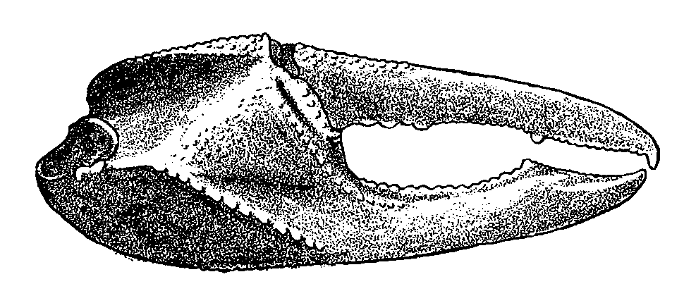

Fiddler Crabs
Home
Blog
Uca bellator minima
Crane (1975)
Species page
Reference
All Scientific Drawings

This drawing is from Crane (1975). It shows the inside view of a major claw of
Uca signata
(she called it
Uca bellator minima.